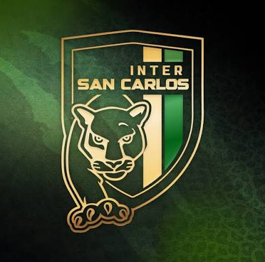
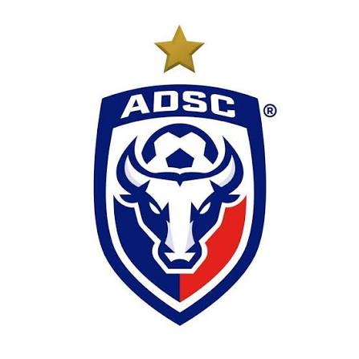

La programación en general
El Canton de San Carlos cuenta con dos equipos de futbol de primera division, InterSC y ADSC. Ambos equipos tienen una gran historia y han sido parte importante del desarrollo del futbol en la region.
ADSC, conocido como "Los Toros del Norte",con su base en Ciudad Quesada de San Carlos ha sido un equipo competitivo en la liga nacional, destacando por su estilo de juego ofensivo y su fuerte base de seguidores.
Por otro lado, InterSC, conocido como "Los Tafas", con su base en PItal de San Carlos, ha demostrado ser un equipo sólido y disciplinado, con una gran capacidad para adaptarse a diferentes estilos de juego.
Un dato importante es que ambos equipos comparten el mismo estadio, el Estadio Carlos Ugalde Álvarez, lo que ha generado una rivalidad histórica entre ellos y ha hecho que los partidos entre InterSC y ADSC sean eventos muy esperados por los aficionados al futbol en la región.
Áreas principales
|
 |
 |